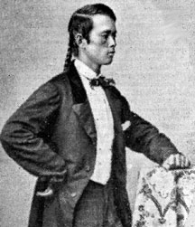

|

NAME: Joseph Pierce
BORN: 1842 (?)
DIED: 1916
ALLEGIANCE: Union
HIGHEST RANK: Corporal
UNIT: 14th Connecticut Infantry, Company F
RECORD: 1862 - mustered into the army as a private
on August 23; 1863 - promoted to corporal in November. 1865
- mustered out with his regiment on May 31.
|
|
Joseph Pierce was worth six dollars in 1852. It was a time
when his country, China, was plagued by civil war and
famine. Starving families took desperate measures to get
money and in the Port city of Canton, the 10-year-old boy's
father sold him to New England sea captain Amos Peck.
During the two-month voyage to the United States, the ship's
crew nicknamed the boy "Joe." When he arrived in Hartford,
Connecticut, to live with the Peck family, he was given the
surname Pierce. Joseph Pierce, though technically a slave,
was apparently treated as part of the family; he played with
the Peck children and went to school with them.
A decade later and a year after the Civil war's start,
Pierce joined the 14th Connecticut Infantry as a private. He
became probably the only Chinese soldier in the Army of the
Potomac. Three weeks after mustering in, at the Battle of
Antietam, Maryland, the fledgling regiment joined the charge
on the Confederate line at the Sunken Road. It lost 137 men.
Just one year later, after fighting at Fredericksburg,
Chancellorsville and Gettysburg, the regiment had only 105
men left of the 1,015 recruits that had departed from
Connecticut.
In 1864 Pierce, then a corporal, fought with the 14th in
Virginia. The regiment lost many men. Despite replacements,
by the beginning of 1865 the muster roll showed only 180
names. By the war's end the 14th had lost more men than any
other Connecticut regiment.
After the war Pierce returned to his home state and settled
in Meriden. He began a successful career as an engraver in
the city's thriving silver industry. In 1876 he married
Martha Morgan and had three children. He lived and worked in
Meriden until 1914. When he died two years later, an
obituary in the local newspaper made no mention of his
unusual background and stated simply and appropriately: he
was "well known and liked."
Source: Civil War Times Illustrated
33:4 (September/October 1994), 90.
|